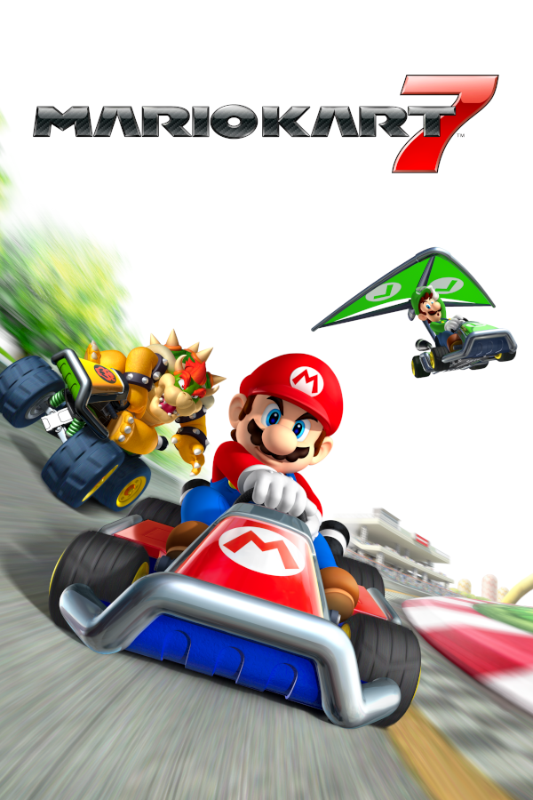

|  | |
| Playtime | Not Played |
| Last Activity | Never |
| Added | 4/29/2025 4:45:40 |
| Modified | 4/29/2025 23:43:25 |
| Completion Status | Not Played |
| Library | Playnite |
| Source | |
| Platform | Nintendo 3DS |
| Release Date | 12/1/2011 |
| Community Score | |
| Critic Score | 85 |
| User Score | |
| Genre | Kart racing |
| Developer | Nintendo EAD Retro Studios |
| Publisher | Nintendo |
| Feature | Multiplayer Single Player |
| Links | Wikipedia Official website |
| Tag | [People] artist: Masaaki Ishikawa [People] artist: Ryan Powell [People] composer: Kenta Nagata [People] composer: Satomi Terui [People] designer: Tom Ivey [People] designer: Yoshihisa Morimoto [People] director: Kosuke Yabuki [People] producer: Hideki Konno [People] producer: Yasuyuki Oyagi [People] programmer: Tim Little [People] programmer: Yusuke Shiraiwa |
Mario Kart 7 is a 2011 kart racing video game developed by Nintendo EAD in cooperation with Retro Studios and published by Nintendo for the Nintendo 3DS. As with the previous games in the Mario Kart series, players participate in racing on various Mario-themed tracks, playing as one of seventeen different Mario characters. While racing, the players make use of power-up items that either assist their character or hinder opposing characters. New additions to the game include hang-gliding attachments for karts, the ability to drive underwater, the ability to drive in first person, and the ability to fully customize the vehicles' builds. The game supports both local and online multiplayer for up to eight players. The game was a critical and commercial success, becoming the best-selling game on the Nintendo 3DS with over 18.99 million copies sold worldwide.
Mario Kart 7 carries on traditional Mario Kart gameplay in which players race against each other in go-karts across 32 courses (new and retro). Most are based on various locations in the Mario series, but two new courses are set on Wuhu Island location from the Wii Fit and Wii Sports Resort games. In addition to traditional button controls, Mario Kart 7 can be played using the Nintendo 3DS gyroscope, in which the action is viewed in first person and the player steers the kart simply by tilting the entire game system. While most gameplay occurs on the top screen of the 3DS hardware, the bottom screen shows an overhead map of the race course. While driving, the players may use power-up items, obtained from running into item boxes located at specific points on the track, that are used to hinder the progression of opponents or to help the player in the race. Some of these power-ups include the series staple items Koopa Shells, Banana Peels, and Super Mushrooms. Three new items were added: Fire Flower, which allows the player to shoot up to ten fireballs, the Super Leaf, which gives the player a tail that allows them to flip over nearby players, collect nearby Coins, and deflect items, and the Lucky Seven, which bestows seven items at once. Coins are also scattered about the tracks; collecting them increases the kart's top speed. Up to ten coins can be collected in each race, but some will be lost if the player comes into contact with hazards or goes out of bounds. Jump actions let players obtain a brief burst of speed when hitting a button prior to driving off ramps, hang glider attachments sometimes allow for controllable gliding segments as well. In the previous installments, driving the kart into a body of water has been considered going out of bounds and would penalize the player by delaying them or being picked up by Lakitu. In Mario Kart 7, however, the karts are fully submersible, thus adding fully underwater track segments.
The game features sixteen playable Mario characters, including Wiggler, Honey Queen, Lakitu, and Metal Mario, who are new to the series, as well as Mii characters saved in the Nintendo 3DS Mii Maker, bringing the total to seventeen. Like in the previous installments, characters are divided into three different weight classes, which impact their driving styles. Mario Kart 7 introduced the ability to customize vehicles prior to races. Vehicle bodies, tires, and hang gliders can be customized with differing control attributes. Mario Kart 7 offers 32 different race tracks, which consist of 16 new tracks and 16 tracks from prior Mario Kart games.
Mario Kart 7 features four single-player game modes: Grand Prix, Time Trial, Balloon Battle, and Coin Runners. Some modes feature multiplayer options. In Grand Prix, the player races against seven computer-controlled opponents in one of eight different cups, each featuring four tracks. The player receives points based on their finishing position in each race ranging from one to ten. After all four races, there will be an award ceremony and the player receives a trophy if they place in the top three of the final standings. Players will also receive a star rank for their performance ranging from one to three stars. In Time Trial, the player races alone to finish the course in the fastest time possible using a Triple Mushroom that can be used at any time during the run. The best time for each track is saved and recorded as a ghost, which the player can compete against in later trials. If the player has SpotPass enabled on their Nintendo 3DS, they will be able to download ghosts from other players and can race against up to seven other ghosts simultaneously. In the Balloon Battle and Coin Runners battle games, the players drive around one of six arenas (three for this game and three from the previous installments) to collect items and attack their opponents to score points within the time limit of two minutes. The player could play online via Nintendo Network until April 2024, participating in races or battles with up to seven other players.
Nintendo EAD began development on Mario Kart 7 in early 2010. The idea to have hang gliding and submersible karts came during the development of the previous Mario Kart game, Mario Kart Wii, and was one of the first gameplay mechanics implemented. The ability to customize the player's kart was added in order to make gameplay more strategic and to boost the multiplayer experience. The game was first publicly announced at E3 2010 under the tentative title Mario Kart 3DS and then shown again at E3 2011, where it was announced for a late 2011 release.
Because Nintendogs + Cats was scheduled to be released first, Mario Kart 7 was given lower priority and only eight staff members were assigned to begin work on it. When it was time to focus on the game, producer Hideki Konno realized that there was not enough staff available due to many other titles being developed at the same time, including The Legend of Zelda: Skyward Sword which had its production extended into 2011. In order to finish the game in time for the 2011 Christmas season, Nintendo consulted with Retro Studios, which had just finished making Donkey Kong Country Returns, to co-develop the game. Retro started work on Mario Kart 7 in December 2010. The team focused on producing the classic racing courses, remakes of courses from the earlier Mario Kart titles, in order to learn both "lessons about the development process [for Mario Kart games]" and "about what makes a good course from a design perspective."
The game's soundtrack was composed by both Kenta Nagata, who worked on the previous Mario Kart titles Mario Kart 64 and Mario Kart: Double Dash, and Star Fox 64 3D composer Satomi Terui.
Shortly after its release, it was discovered that three race tracks (Wuhu Island, Maka Wuhu and GBA Bowser Castle 1) had contained glitches that allowed players to skip over a significant portion of the track, often exploited as a cheat during online play. An update to fix it in online play was released in May 2012.
Mario Kart 7 has received generally favorable reviews. It holds an 85/100 rating on Metacritic based on 60 critic reviews and an 85.17% rating on GameRankings based on 45 reviews. IGN scored it a 9/10, praising "a handful of incredible innovations" and the game's multiplayer, particularly community features and customizable racing rules, but criticizing the small roster of only 17 characters, compared to that of Mario Kart Wii's 25 characters. Computer and Video Games gave the game a 9.4/10 and Eurogamer gave it an 8/10. Nintendo World Report gave the game an 8.5, stating that it is more of the same and the gliding mechanics feel underutilized.
On the more negative side, James Stephanie Sterling of Destructoid gave the game a 5/10, stating that "sticking to tradition has not worked in Nintendo's favor" and saying the new glider and underwater sections "exist to provide the illusion of variety rather than actually altering the core experience". Giant Bomb scored the game a 3/5, noting "your enjoyment of Mario Kart 7 will likely hinge on your continued appreciation of [the series'] formula".
IGN awarded Mario Kart 7 the IGN's Editors' Choice. Mario Kart 7 was nominated for "Best 3DS Game" and "Best Driving Game" at GameTrailers' 2011 Game of the Year Awards, but lost both respectively to Super Mario 3D Land and Forza Motorsport 4. Digital Spy awarded Mario Kart 7 the "Best Game of 2011" for the Digital Spy readers' awards of 2011. Edge awarded Mario Kart 7 as the best portable game of 2011. During the 15th Annual Interactive Achievement Awards, the Academy of Interactive Arts & Sciences nominated Mario Kart 7 for "Racing Game of the Year" and "Handheld Game of the Year".
Mario Kart 7 sold 3.48 million units in the U.S. as of August 2014. In Japan, the game has sold over 1.5 million units as of January 25, 2012. By March 31, 2023, the game had sold 18.99 million units globally. The game has been nominated for "Favorite Video Game" twice in the Kids Choice Awards, but lost to Just Dance 3 in the 2012 edition and Just Dance 4 in the 2013 edition.